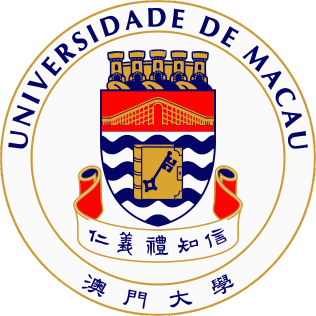

Ph.D. in Computer Science
2023–Present
University of MacauPh.D. Candidate · Expected graduation: February 2027
NLP2CT Lab, advised by Prof. Derek F. Wong.

University of MacauPh.D. Candidate · Expected graduation: February 2027
NLP2CT Lab, advised by Prof. Derek F. Wong.
NLP2CT Lab, advised by Prof. Derek F. Wong; collaborated with Prof. Xuebo Liu.